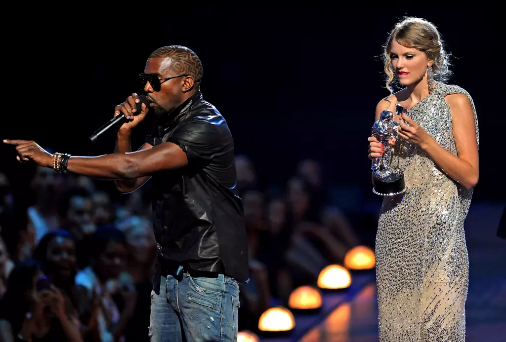
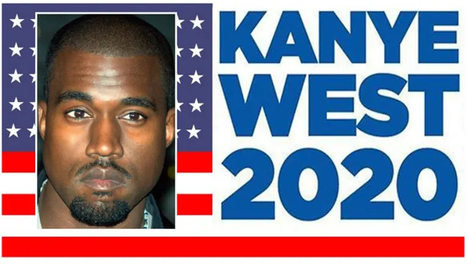
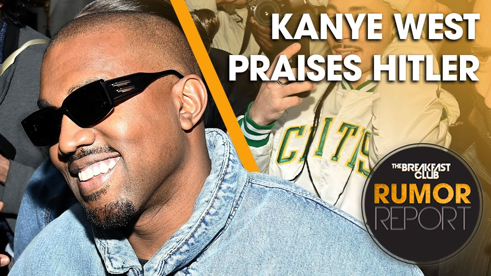
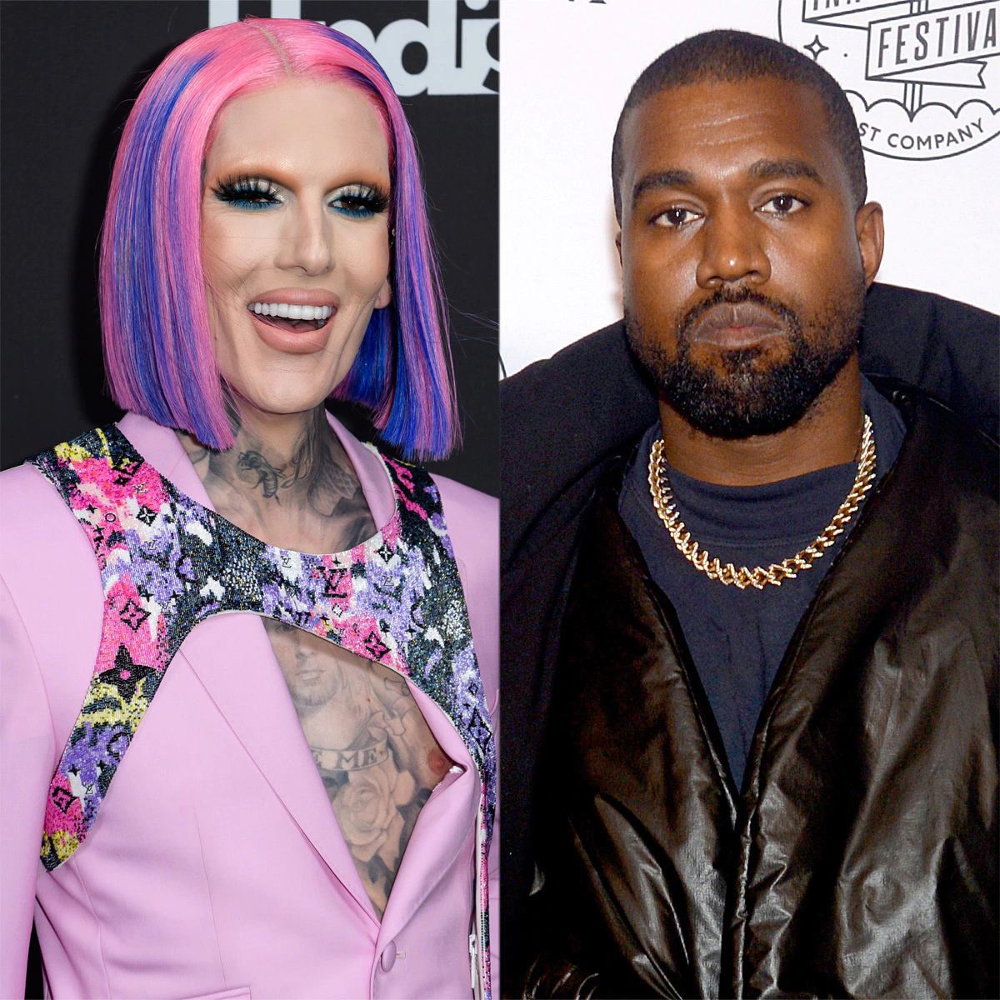
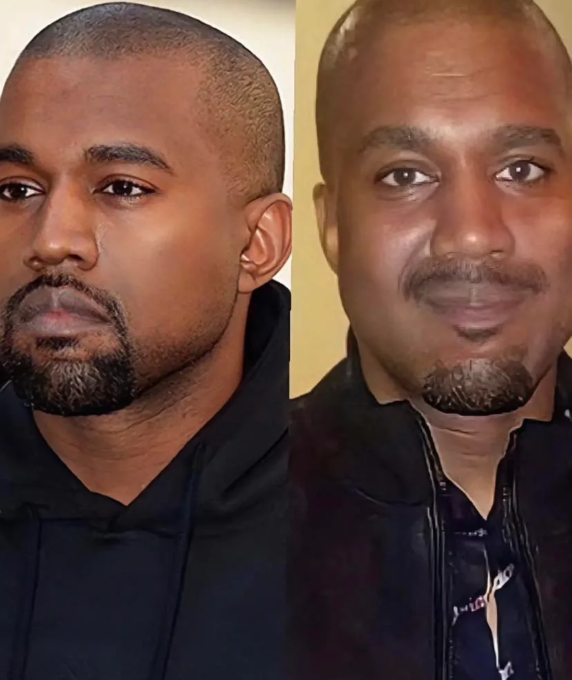
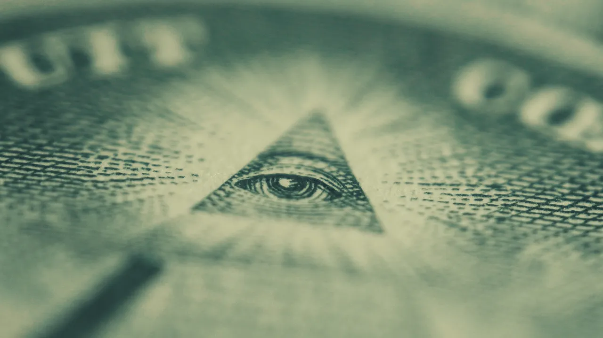

Oleme kuulnud Kanye Westi muusikaalastest saavutustest, tema armsatest lastest ning naisest Kim Kardashianist, kuid kas oleme kursis ka tema tulisemate skandaalidega? Siin lehel leiate Westi suurimad skandaalid ja vandenõuteooriad.
2009. aastal katkestas Kanye West Taylor Swifti VMA auhinnasarja kõne. Räppar kiirustas lavale, et protesteerida Swifti võidu vastu, öeldes, et oleks võitma pidanud hoopis Beyoncé oma lauluga "Single Ladies". Taylor Swift on hiljem tõdenud, et olukord tegi tale haiget, olles vaid 20-aastane.
2015. aastal teatas West, et kandideerib 2020. aastal Ameerika Ühendriikide presidendiks. 2020. aasta 4. juulil kinnitas Kanye West enda plaani. Mitmed kuulsused toetasid teda, näiteks Elon Musk, kes sõnas, et Westil on tema täielik toetus. Siiski kampaania ebaõnnestus, koguti vaid 0.04% häältest.
2022. aasta detsembris võttis West sõna intervjuus Alex Jonesiga, kus ta avaldas, et talle meeldib Hitlerit ning toetab natse. Kuigi maailm oli ka varasemalt kuulnud Westi kontroversiaalsetest, antisemiitlikest mõtetest, oli see üks tema šokeerivamaid sõnavõtte, mis pani inimesi teda vihkama.
Enamus staare kasutavad lavanime, kuid neil on siiski ka pärisnimi. Kanye Omari West lasi 2021. aasta oktoobris muuta enda nime Ye-ks.
2021. aasta jaanuaris, kui oli teada, et West ja tema abikaasa Kim lahutavad, tekkis kuulujutt, et lahkuminek toimus, sest Kanye pettis Kimi Youtuber Jeffree Stariga. Hiljem Youtube'i täht selgitas olukorda öeldes, et pole kunagi olnud suhtes Kanye Westiga.
Paljud on arvamusel, et Kanye West, keda praegu tihti uudistes näeme, ei ole tema ise, vaid on kloon. Inimesed väidavad, et tema nägu, kehaesitus ja iseloom ei ole endised. Kuulujutt kloonimisest on levinud juba alates 2016. aastast, kui West sõnas "if i disappear [and] come back it’s not me, so how can it be [a] conspiracy". See, kas kuulujutt on tõsi, võibki jääda saladuseks.
Arvatakse, et Illuminati on mõjuvõimsate kuulsuste kogum, kes kontrollivad kogu maailma. Arvatakse, et sinna kuuluvad kõik rikkad ja mõjuvõimsad inimesed, nende hulgas ja Kanye West. Kuigi West on väitnud, et pole grupiga seotud, usuvad paljud siiski vastupidist.
